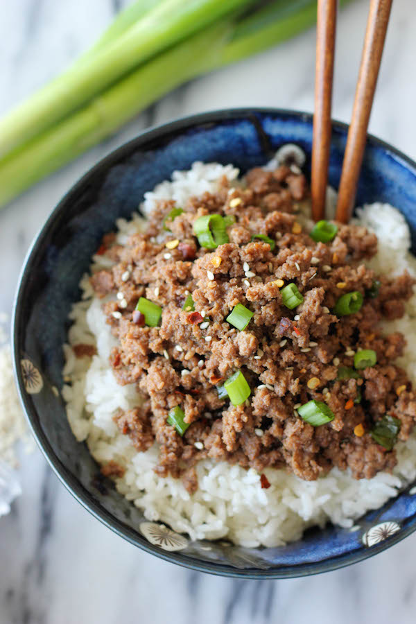

Korean Beef with Rice

The korean beef bowl is one of my favorite dishes to make, quick, easy, delicious.
Ingredients
- Ground beef 93% lean 7% fat (1 lb)
- Low sodium soy sauce (1/3 cup)
- Brown granulated sugar (1/3 cup)
- Sesame oil (2 tsp)
- Ground Ginger (2 tsp)
- Garlic (3-4 cloves)
- Black Pepper (1 tbsp)
- Paprika Powder (2 tsp)
- Red Pepper Flakes (2 tsp or to spice preference)
- Avocado Oil (1 1/2 tbsp)
- Green Onions (Finely sliced)
Steps
- Chop garlic to thin sliced pieces.
- Get a medium-large sized skillet, heat avocado oil. Medium-high temperature.
- Put ground beef in pan when hot enough.
- Break up the ground beef into tiny pieces.
- Combine all the ingredients (spices) together
- Whisk all ingredients. Make sure it is evenly blended.
- Let beef cook until browned.
- Pour spice mixture over beef.
- Stir beef with seasonings together.
- Cook till sauce has soaked into the beef.
- Turn off heat and serve.